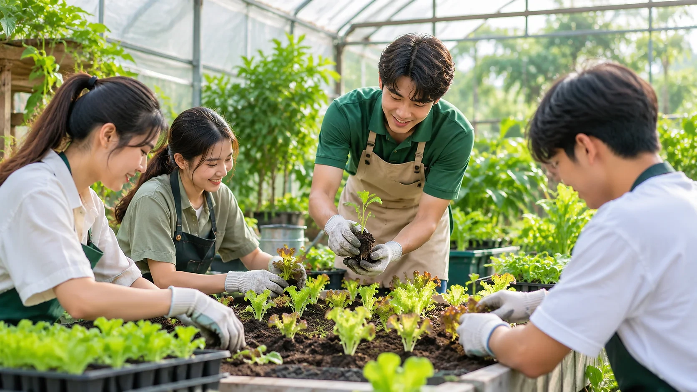
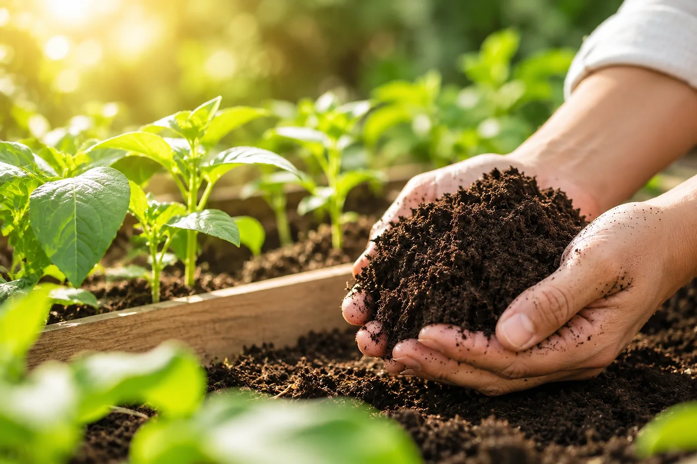

เข้าใจดินและสารปรับปรุงดิน
ดินดีเป็นอย่างไร สารปรับปรุงดินจากเศษอาหารคืออะไร และใช้อย่างไรให้เหมาะสม
CIVIO ORGANIC GROWING COURSE
เรียนรู้การปลูกผักตั้งแต่เตรียมดิน เพาะกล้า ดูแล ไปจนถึงเก็บเกี่ยว โดยใช้สารปรับปรุงดินที่ได้จากเศษอาหาร เหมาะกับคนที่อยากเริ่มปลูกผักกินเองหรือต่อยอดเป็นรายได้

03 / GROWING COURSEเรียงจากง่ายไปยาก ให้ลงมือทำตามได้จริง ปรับเนื้อหาให้เหมาะกับกลุ่มผู้เรียนได้
ดินดีเป็นอย่างไร สารปรับปรุงดินจากเศษอาหารคืออะไร และใช้อย่างไรให้เหมาะสม
เลือกผักที่ปลูกง่ายและเหมาะกับพื้นที่ พร้อมวิธีเพาะกล้าให้แข็งแรง
ระยะปลูก การรดน้ำ และการบำรุงด้วยวัสดุอินทรีย์ที่หาได้ใกล้ตัว
อ่านอาการของต้นผัก แมลงและโรคที่พบบ่อย โดยไม่พึ่งสารเคมีเกินจำเป็น
เก็บผลผลิตให้ถูกวิธีเพื่อคงความสดและยืดอายุผัก
แนวคิดการวางแผนปลูกเพื่อจำหน่าย การคัดเกรด และการสื่อสารกับลูกค้า
CIVIO เคยจัดกิจกรรมเรียนรู้ทั้งในฟาร์ม กับเด็กนักเรียน และถึงองค์กร เลือกรูปแบบที่เหมาะกับคุณได้
เยี่ยมชมสวนผักออร์แกนิกส์จริง ดูการใช้สารปรับปรุงดินจากเศษอาหารในแปลงปลูก และลองลงมือทำเอง
เคยจัดกิจกรรมสอนเด็กอนุบาลปลูกผักอินทรีย์ที่ CIVIO Farm ปรับเนื้อหาให้เหมาะกับวัยของผู้เรียน
CIVIO เคยไปบรรยายให้ความรู้เรื่องการจัดการขยะเศษอาหารถึงองค์กร เช่น บริษัท ไอ.พี. เนเชอรัล โปรดักส์ จำกัด


ไม่ว่าจะอยากเริ่มปลูกผักกินเองที่บ้าน พัฒนาพื้นที่ว่างในชุมชน หรืออยากสร้างกิจกรรมเรียนรู้ให้โรงเรียนและองค์กร คอร์สนี้ปรับระดับเนื้อหาให้เข้ากับผู้เรียนได้

ไม่จำเป็นครับ คอร์สเริ่มจากพื้นฐานและเรียงเนื้อหาจากง่ายไปยาก
เรียนที่ CIVIO Farm ได้ และสามารถปรึกษาทีมงานเรื่องกิจกรรมสำหรับโรงเรียนหรือการบรรยายถึงองค์กรได้
กรอกแบบฟอร์มติดต่อบนหน้าแรก หรือโทรหาทีมงาน CIVIO ตามช่องทางที่ระบุไว้ ทีมงานจะแจ้งรอบ สถานที่ และค่าบริการ
ได้ แจ้งจำนวนผู้เข้าร่วมและเป้าหมายกับทีมงาน เพื่อออกแบบเนื้อหาให้เหมาะสม
เรานำสารปรับปรุงดินที่ได้จากเศษอาหารมาใช้ปลูกผักจริง ผู้เรียนจึงเห็นวงจรตั้งแต่เศษอาหารไปจนถึงผักที่เก็บเกี่ยวได้
ติดต่อทีมงานเพื่อสอบถามรอบอบรม สถานที่ และรายละเอียดการสมัคร